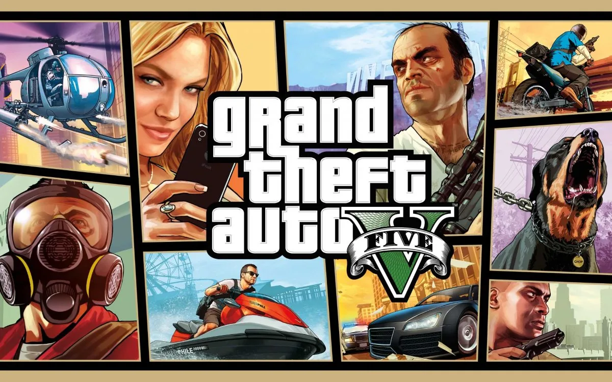

ライト
FHD 高画質
- 予算目安 15万円前後
- CPU Ryzen 7 5700X
- GPU RTX 5060
まずGTA5を快適に遊びたい人向け。フルHD中心なら十分遊びやすい構成です。

オープンワールド / 中量級
GTA5（Enhanced・Legacy）やGTA Onlineを快適に遊ぶためのおすすめゲーミングPCを紹介。公式の必要スペック、MODの注意点、GTA6に向けた買い替え判断も解説します。
QUICK ANSWER
まず知っておきたいのは、今のPC版GTA5には要求スペックの違う「Enhanced」と「Legacy」の2種類があることです。
情報の確認日：2026年10月14日（Rockstar Games公式サイト・サポートページ）
OFFICIAL SPEC
以下はRockstar Gamesが公開している公式スペックです。「最低」は起動して遊べる下限、「推奨」は標準的な画質で快適に遊ぶための目安で、どちらも高画質・高fpsを保証するものではありません。
| 項目 | 最低 | 推奨 |
|---|---|---|
| OS | Windows 10（ビルド1909以降） | Windows 11 |
| CPU | Intel Core i7-4770 / AMD FX-9590 | Intel Core i5-9600K / AMD Ryzen 5 3600 |
| メモリ | 8GB | 16GB（デュアルチャネル） |
| GPU | GeForce GTX 1630（VRAM 4GB）/ Radeon RX 6400（VRAM 4GB） | GeForce RTX 3060（VRAM 8GB）/ Radeon RX 6600 XT（VRAM 8GB） |
| ストレージ | 105GB・SSD必須 | 105GB・DirectStorage対応ドライブ |
RTX 3060には12GB版と8GB版があり、公式推奨は「VRAM 8GB」と書かれています。8GB版はメモリの帯域が狭く12GB版より少し遅いので、12GB版なら推奨を満たしたうえで余裕があると考えてOKです。
| 項目 | 最低 | 推奨 |
|---|---|---|
| OS | Windows 10（64bit） | Windows 10（64bit） |
| CPU | Intel Core 2 Quad Q6600 / AMD Phenom 9850 | Intel Core i5-3470 / AMD FX-8350 |
| メモリ | 4GB | 8GB |
| GPU | NVIDIA 9800 GT 1GB / AMD HD 4870 1GB | GeForce GTX 660 2GB / Radeon HD 7870 2GB |
| ストレージ | 125GB（HDD可） | 125GB（HDD可） |
Rockstarは、アップデートやダウンロードコンテンツで必要スペックが変わる場合があること、ノートPC向けチップセットや内蔵GPUでは動かない場合があることも案内しています。最新の表記はRockstar公式サポート（GTA5 PC必要動作環境）で確認できます。
| 比較 | Enhanced | Legacy |
|---|---|---|
| 向いているPC | SSDを積んだ、ここ数年のゲーミングPC | HDDのPCや、かなり古いPC |
| CPUの目安（推奨） | Core i5-9600K / Ryzen 5 3600 | Core i5-3470 / FX-8350 |
| GPUの目安（推奨） | RTX 3060 8GB / RX 6600 XT 8GB | GTX 660 2GB / HD 7870 2GB |
| メモリ（推奨） | 16GB | 8GB |
| ストレージ | 105GB・SSD必須 | 125GB・HDD可 |
| グラフィック機能 | レイトレーシング（影・反射・アンビエントオクルージョン・グローバルイルミネーション）、DLSS、FSR、DirectStorageによる高速読み込み | 従来の描画のみ（レイトレーシング・DLSS非対応） |
| GTA Online | EnhancedとLegacyのプレイヤー同士は一緒に遊べません。Legacyのストーリー進行とGTA Onlineのキャラクターは、Enhancedへ1回だけ移行できます。 | |
| こんな人に | ほとんどの人はこちら。きれいな画質で遊びたい人 | スペックが足りない人、Legacy向けMODを使い続けたい人 |
PC版GTA5を持っている人は、Enhancedへ無料でアップグレードできます。Enhancedは別のゲームとしてインストールされるため、ストレージの空きを確保してから導入しましょう。
ここからは、公式スペックではなくSippoが快適さを優先して選んだ構成です。
RECOMMENDED BUILDS
GTA5 / GTA Onlineは極端に重いゲームではありませんが、高画質や高fpsを狙うならCPUとGPUのバランスが重要です。
ライト
まずGTA5を快適に遊びたい人向け。フルHD中心なら十分遊びやすい構成です。
ミドル
高画質やMOD環境も視野に入れたい人向け。長く使いやすい構成です。
ハイエンド
Enhanced版を4Kで楽しみたい人向け。DLSSなどのアップスケーリング併用が前提で、VRAM 16GBの余裕は重いMODにも効きます。
RESOLUTION
GTA5は解像度とレイトレーシングの設定でGPU負荷が大きく変わります。下の構成はEnhanced版を基準にしたSippo独自の目安です。fpsは画質設定・場所（街中か郊外か）・GTA Onlineのロビー人数で大きく変わるため、根拠のない数値は載せていません。
FHD（1920×1080）
公式推奨のRTX 3060より性能が高く、フルHDなら高画質で余裕があります。レイトレーシングはDLSS / FSRと組み合わせて部分的に使うのが現実的です。
WQHD（2560×1440）
画質と滑らかさのバランスが良い、GTA5で一番満足しやすい帯です。RTX 5070はVRAM 12GB、RX 9070は16GBで、重いMODも視野に入れるならRX 9070も有力です。
4K（3840×2160）
どちらもVRAM 16GB。4Kではアップスケーリング（DLSS / FSR）の併用が前提です。レイトレーシングを全部最大にしたいなら、さらに上のGPUが必要になる場合があります。
RTX 5060とRTX 5070の評価：どちらもGTA5には妥当な選択です。ただしRTX 5060のVRAMは公式推奨のRTX 3060と同じ8GB。WQHDや高解像度テクスチャMODも使うなら、VRAM 16GBのRTX 5060 Ti 16GBやRX 9060 XT 16GBを選ぶと安心です。GTA5だけを遊ぶならRTX 5070を超えるGPUは必須ではありません。
CHECK YOUR PC
買い替えの前に、今のPCがどのあたりにいるかを確認しましょう。下の表は公式スペックとGPUの性能差から整理した、Enhanced版での大まかな目安です。
| 今のGPU | Enhancedでの目安 |
|---|---|
| GTX 1650 / GTX 1060 6GB | 最低スペックは上回ります。フルHD・低〜中設定が中心で、レイトレーシングは使えません。重く感じるならLegacy版も選択肢です。 |
| RTX 2060 / RTX 3050 / RX 6600 | 公式推奨の少し手前。フルHD・中〜高設定が目安で、DLSS / FSRを使うと余裕が出ます。 |
| RTX 3060 / RTX 4060 / RX 6600 XT | 公式推奨クラス。フルHD高設定の基準です。GTA5のためだけに買い替える必要はありません。 |
| RTX 5060 / RTX 4060 Ti / RX 9060 XT | 推奨を上回ります。フルHD高画質＋一部レイトレーシング、WQHDも設定次第で狙えます。 |
| RTX 5070 / RX 9070 以上 | WQHD高画質が中心。4Kもアップスケーリング併用で視野に入ります。 |
GPUが足りていても、CPUが古いと街中や人の多いGTA Onlineのロビーでカクつくことがあります。Enhanced版の最低CPUは4コア8スレッドのCore i7-4770です。CPUとGPUのどちらが足を引っ張っているかは、PCアップグレード診断で今の構成を入力すると確認できます。RTX 3060を使っている人はRTX 3060は2026年もまだ使える？も参考にしてください。
SETTINGS
やみくもに全部を下げるより、「見た目の変化が小さいのに重い設定」から下げるのがコツです。項目名はEnhancedとLegacy、アップデートで変わる場合があります。
| 設定 | 重さ | おすすめの考え方 |
|---|---|---|
| アップスケーリング（DLSS / FSR）Enhanced | 軽くなる | WQHD・4Kで特に効果大。まず「品質」寄りのモードから試し、足りなければ段階を上げます。 |
| レイトレーシング（影・反射・AO・GI）Enhanced | 重い | 画質の向上は大きい一方で負荷も最大級。重いときは反射とグローバルイルミネーションから下げます。 |
| 解像度 | 重い | 下げると画面がぼやけやすいので、先にアップスケーリングで調整するのがおすすめです。 |
| 草の品質 | 重い | 郊外や山間部で効きます。最高から一段下げるだけでも軽くなりやすい項目です。 |
| 影の品質・ソフトシャドウ | 中 | 見た目への影響が比較的小さく、下げやすい項目です。 |
| MSAA（アンチエイリアス） | 重い | 解像度が高いほど負荷大。TAAやDLSS / FSRで代わりに滑らかにできます。 |
| テクスチャ品質 | VRAM | fpsよりVRAMに効きます。設定画面のビデオメモリ表示が上限を超えない範囲で選びます。 |
| 人口密度・描画距離 | CPU | 街中で重いときに効くCPU側の設定。古いCPUではここを下げます。 |
解像度を上げる・レイトレーシングを入れると重くなり、下げると軽くなる状態です。アップスケーリング → レイトレーシング → 草・影・MSAAの順で調整します。
画質を下げてもfpsがほとんど変わらず、街中や人の多い場所だけ重い状態です。人口密度・描画距離を下げるか、CPUの交換・買い替えを検討します。
MOD & ONLINE
MODは入れるものによって必要なスペックが大きく変わります。また、GTA OnlineでのMOD利用はアカウントの処分につながるため、ストーリーモードとは分けて考えましょう。
これまでの多くのMODはLegacy版向けに作られてきました。Enhanced版で動くかはMODごとに違うため、配布ページの対応バージョンを必ず確認してください。Sippoでは個別のMODの互換性や安全性は保証できません。
GTA OnlineでのMOD・改造ツールは使わない
GTA Onlineで改造ツールやチートを使うことはRockstarの規約違反で、アカウント停止や進行状況のリセットの対象になります。PC版GTA Onlineにはアンチチート（BattlEye）も導入されています。ストーリーモード用のMODを入れている場合も、オンラインに入る前に外しておくのが安全です。配布元のはっきりしないMODやツールには、マルウェアが混入している危険もあります。
GTA VI
GTA6を待っている人向けに、2026年10月14日時点で公式に確認できる情報と、PC選びの考え方をまとめます。
| 項目 | 状況 | 区分 |
|---|---|---|
| 発売日 | 2026年11月19日（予定） | 公式 |
| 対応機種 | PlayStation 5 / Xbox Series X|S | 公式 |
| PC版 | 未発表 | 公式 |
| PC版の必要・推奨スペック | 未発表 | 公式 |
| PC版の発売時期 | 海外メディアが匿名の業界関係者の話として「2027年前半」と報道。Rockstarは発表していません | 報道 |
出典：Grand Theft Auto VI 公式サイト／Rockstar公式サポート（GTA6のプラットフォームとエディション）。発売日や対応機種は変更される可能性があるため、購入前に公式情報を確認してください。
GTA5だけを遊ぶ人
Enhanced版の公式推奨はRTX 3060クラス。フルHDならRTX 5060クラスで十分余裕があります。
GTA6のPC版を待つ人
PC版の発売時期も必要スペックも未発表です。GTA6のためだけなら、公式スペックが出てから選んだ方がGPU選びで失敗しにくくなります。
RTX 3060などを使っている人
GTA5 Enhancedは推奨どおり遊べます。GTA6のPC版スペックが出たら、GPU交換で足りるかをアップグレード診断で確認しましょう。
今PCを買う必要がある人
VRAM 12〜16GBのGPU、メモリ32GB、2TB前後のNVMe SSD、容量に余裕のある電源を選ぶと、後からの交換で対応しやすくなります。
新しい大作ほどVRAMやストレージの要求が上がる傾向はありますが、GTA6のPC版が特定のGPUでどれくらい動くかは、公式スペックや実測が出るまで誰にも分かりません。「GTA6対応」とうたう製品も、現時点では推測にもとづく表現です。
| 項目 | GTA5 | GTA6 |
|---|---|---|
| 舞台 | ロスサントス（サンアンドレアス州） | バイスシティを含むレオナイダ州 |
| 主人公 | マイケル、フランクリン、トレバー | ジェイソン、ルシア |
| PC版 | あり（Enhanced / Legacy） | 未発表 |
| PCの公式スペック | 公開済み（このページ上部） | 未発表 |
| 今すぐPCで遊べるか | 遊べる | 遊べない（発売予定は家庭用ゲーム機のみ） |
FAQ
Legacy版なら公式の最低スペックがメモリ4GB・GPU 1GBと低く、古いPCでも起動の対象です。ただし最低スペックは「動く」目安で、快適さは期待できません。ノートPCの内蔵GPUは非対応になる場合があるとRockstarも案内しています。
SSDがあり、GTX 1630 / RX 6400以上のGPUを積んだPCならEnhancedがおすすめです。画質が良く、読み込みも速くなります。HDDしかない古いPCや、Legacy向けに作られたMODを使いたい場合はLegacyを選びます。
RTX 3060（8GB）はEnhanced版の公式推奨GPUそのものなので、フルHDでは推奨どおりの環境です。12GB版はVRAMに余裕がある分さらに安心です。レイトレーシングを上げる場合はDLSSを併用してください。
公式は4K向けのスペックを出していません。Sippoとしては、DLSSやFSRと組み合わせてRTX 5070 Ti / RX 9070 XT（いずれもVRAM 16GB）クラスを目安にしています。レイトレーシングを最大まで使うかどうかで必要な性能は大きく変わります。
Enhanced版ならまずDLSS / FSRを有効にし、次にレイトレーシングの反射とグローバルイルミネーションを下げます。それでも重ければ草・影・MSAAの順です。街中や人の多い場所だけ重い場合はCPU側の負荷なので、人口密度や描画距離の設定を下げます。
入れるMODによります。車両を少し追加する程度なら推奨スペックで足りることが多い一方、グラフィック系MODや高解像度テクスチャは公式推奨を大きく上回るGPUとVRAMを求めます。MOD前提ならメモリ32GBとVRAM 12GB以上を目安にしてください。
2026年10月14日時点で、RockstarはPC版を発表していません。公式に発表されている対応機種はPlayStation 5とXbox Series X|Sで、発売日は2026年11月19日です。PC版の発売時期や必要スペックも未発表です。
GTA6のためだけなら、PC版の発表と公式スペックを待ってからでも遅くありません。今のPCが壊れかけている、GTA5や他のゲームを今すぐ快適に遊びたいといった理由があるなら、VRAMやメモリに余裕のある構成を選んでおくと後から困りにくくなります。